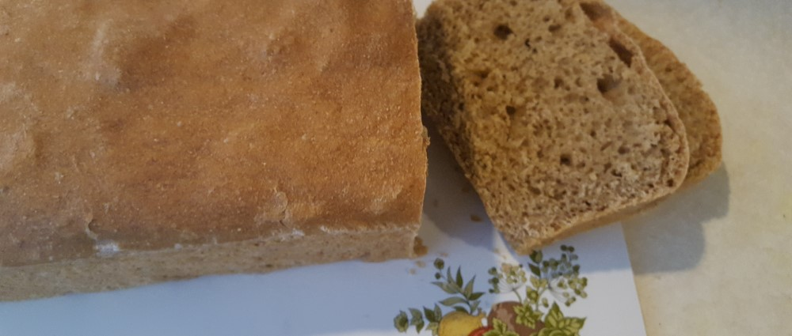

Step-by-Step Intructions
Follow these instructions for an easy hands-free bread-making recipe.
Step 1: Collect your ingredients and Equipment

Check the ingredient list above and gather all the materials for your bread. If your yeast fresh? Do you need to take the time to proof it? See notes above about proofing your yeast For this Honey Whole Wheat Bread, you need flour, water, yeast, salt, olive oil, honey and cinnamon. I use Wheat Montana's Gold White Whole-Wheat for flour. A white-wheat isn't as dense heavy whole wheat. Once you have everything, next make sure you have your tools: you need a large bowl, a small bowl for proofing the yeast, measuring cups, a wooden spoon and a loaf pan.
Step 2 Measure and Mix
After collecting your ingredients carefully measure out the flour. If you scoop your flour into your measuring cup with a spoon then you don't compact it and you won't get too much flour. Level off the top of your measuring cup. Please note: make sure to stir your salt into the flour before adding the yeast. Salt can kill your yeast. If you have proofed your yeast, then you don't have to worry about it.
The bread dough needs to mix together into a sticky ball, but not too sticky. If you have too much water, add flour 1 TBSP at a time, sometimes a 1/2 cup of flour or more. If your dough is too dry, add more warm water 1 TBSP at a time. Continue to mix until your dough comes together in a rough ball. It may be quite sticky, but that's okay. You cannot overmix this.
Step 3 Rising and Baking
Normally, after mixing you'd knead your dough, but we're skipping that step and moving on to the rising.
Oil your large bowl and add your dough ball to the bowl. Allow to rise overnight, 8-12 hours. Cover the bowl with a dish towel.
The Next day
The dough will have doubled in volume in the bowl and forms a thick dried out crust on top. (If you want to prevent the crust, you need to cover your bowl in clear plastic wrap.) Punch your dough and flatten. Then roll or fold it into a loaf shape. Oil your loaf pan, and place the dough seam-side down. Push it into the corners. Cover with the dish towl and allow to rise again. You can leave it all morning, 2-5 hours, until the dough has risen just above the edge and forms a round top. This second rising is very flexible. Place your dough in a warm spot to have it rise faster.
When the dough is risen again, preheat your oven to 400° F.
After the oven is preheated, turn the heat down to 350° F, and bake for 40-50 minutes.
Test your bread for doneness by tapping the bottom. You should hear a hollow sound and the bread should be a dark brown on top. Don't underbake!
Allow baked bread to rest 10 minutes in the pan, then remove and allow to cool before bagging it. Or eat it now when its warm and fresh. You have no reason to hold back now. You've waited long enough making this bread!